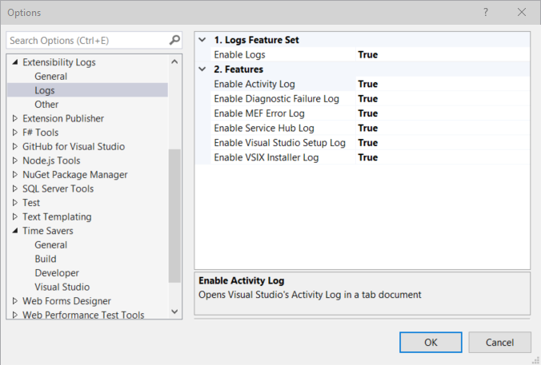

Features
Toolbar¶
For those people who prefer their commands front-and-center, available all the time with a single click, this extension adds a new Extensibility Logs toolbar. You'll need to enable the toolbar before you'll see it.

Menu¶
For those people who don't want to add yet another toolbar, this extension also adds a new Extensibility Logs menu to the View menu.

Logs¶
Each of the logs can be individually disabled, or all logs disabled together.
Activity Log¶
Opens Visual Studio's Activity Log in a tab in Visual Studio, without having to first remember where the file is stored, and then open it in your editor of choice.
- Folder: %APPDATA%\Microsoft\VisualStudio\instance_id\
- File: ActivityLog.xml
Diagnostic Failure Log¶
Opens MSBuild's latest Diagnostic Failure Log in a tab in Visual Studio, without knowing how to find it first, and then open it in your editor of choice.
- Folder: %TEMP%
- Files: MSBuild_*.failure.log
MEF Error Log¶
Opens Visual Studio's MEF Error Log in a tab in Visual Studio, without having to search for it, and then open it in your editor of choice.
- Folder: %LOCALAPPDATA%\Microsoft\VisualStudio\instance_id\ComponentModelCache
- File: Microsoft.VisualStudio.Default.err
Service Hub Log¶
Opens the latest Service Hub Log in a tab in Visual Studio, without first knowing how to it first, and then open it in your editor of choice.
- Folder: %TEMP%\servicehub\logs
- Files: VsixServiceDiscovery-*.log
Visual Studio Setup Log¶
Opens the latest Visual Studio Setup Log in a tab in Visual Studio, without scrambling to find it, and then open it in your editor of choice.
- Folder: %TEMP%
- Files: dd_setup_*.log
VSIX Installer Log¶
Opens the latest VSIX Installer Log in a tab in Visual Studio, without knowing what the file's called and how to find it, and then open it in your editor of choice.
- Folder: %TEMP%
- Files: dd_VSIXInstaller_*.log
Other¶
Environment Variables¶
Displays the environment variables for the current process in a tab in Visual Studio, without having to open a command prompt and issue a SET command.
Path Variables¶
Displays Windows' current search paths for executable files in a tab in Visual Studio, without having to open a command prompt and issue a PATH command.
Visual Studio Folder¶
Opens the current Visual Studio instance's folder in a File Explorer window, without having to first remember the location of the folder, and then open it in an external File Explorer window.
- Folder: %LOCALAPPDATA%\Microsoft\VisualStudio\instance_id\
Options¶
Any commands that have been disabled will still appear on the toolbar, but will be inactive, but they won't appear in the menu. The toolbar buttons can be hidden by removing them from the Extensibility Logs toolbar.
General Options¶
Enable Extensibility Logs¶
This setting allows the whole set of Extensibility Logs features to be turned off together.
Version Number¶
Displays then version number of Extensibility Logs that's currently installed.
Logs Options¶

Enable Logs Features¶
This setting allows the whole set of Logs features to be turned off together.
Enable Activity Log¶
The Activity Log feature can be disabled by setting Tools | Options | Extensibility Logs | Enable Activity Log
to false.
Enable Diagnostic Failure Log¶
The Diagnostic Failure Log feature can be disabled by setting Tools | Options | Extensibility Logs | Enable Diagnostic Log
to false.
Enable MEF Error Log¶
The MEF Error Log feature can be disabled by setting Tools | Options | Extensibility Logs | Enable MEF Error Log
to false.
Enable Service Hub Log¶
The MEF Error Log feature can be disabled by setting Tools | Options | Extensibility Logs | Enable Service Hub Log
to false.
Enable Visual Studio Setup Log¶
The Visual Studio Setup Log feature can be disabled by setting Tools | Options | Extensibility Logs | Enable Visual Studio Setup Log
to false.
Enable VSIX Installer Log¶
The VSIX Installer Log feature can be disabled by setting Tools | Options | Extensibility Logs | Enable VSIX Installer Log
to false.
Other Options¶
Enable Other Features¶
This setting allows the whole set of Other features to be turned off together.
Enable Environment Variables¶
The Environment Variables feature can be disabled by setting Tools | Options | Extensibility Logs | Enable Environment Variables
to false.
Enable Path Variables¶
The Path Variables feature can be disabled by setting Tools | Options | Extensibility Logs | Enable Path Variables
to false.
Enable Visual Studio Folder¶
The Visual Studio Folder feature can be disabled by setting Tools | Options | Extensibility Logs | Enable Open Visual Studio Folder
to false.